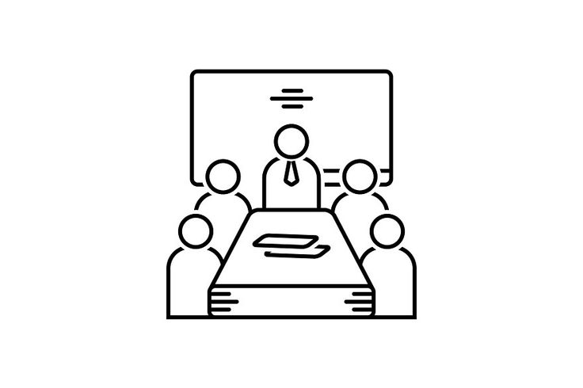

Pagina web para una empresa de eventos
Presentacion de integrantes
Especializado en generar leads a través de estrategias de marketing digital.

Especializado en generar leads a través de estrategias de marketing digital.

Experta en estrategias de marketing digital y creación de contenido.

Colaboraciones estratégicas con influencers para impulsar la visibilidad y el engagement de la marca.
Especializado en implementar soluciones de automatización para mejorar la eficiencia operativa y la experiencia del cliente.